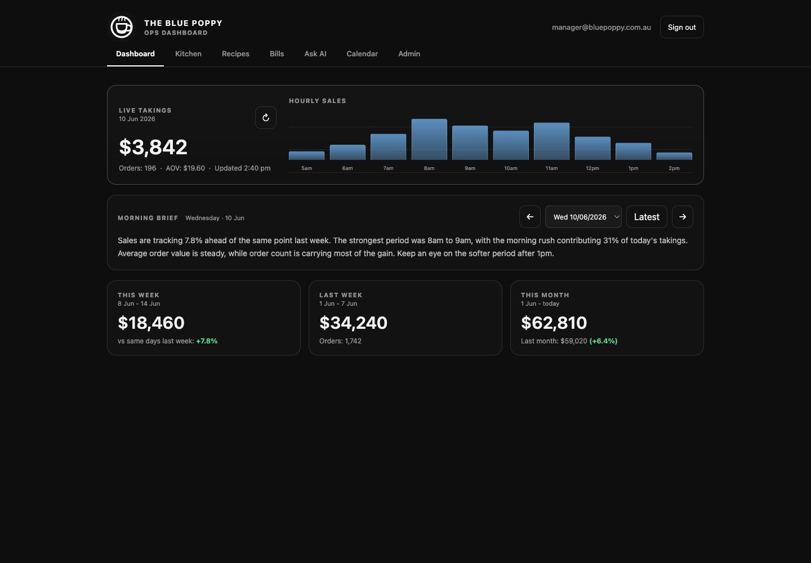

Same representative data and viewport. The proposal changes hierarchy,
navigation, and the way trends are surfaced. It does not change product behavior.
Desktop - 1440 x 1000
BeforeFunctional, restrained, equal-weight panels

ProposedStronger live story, visible trends, calmer navigation